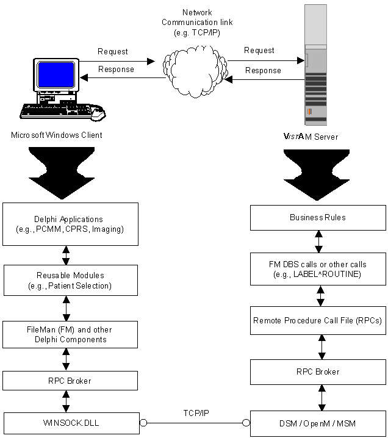

Introduction
Topics
Overview
The RPC Broker is considered to be part of
the infrastructure of VISTA. It
establishes a common and consistent foundation for client/server applications
being written as part of VISTA.
The RPC Broker is a bridge connecting the
client application front-end on the workstation (e.g., Delphi GUI applications)
to the M-based data and business rules on the server. It links one part of a
program running on a workstation to its counterpart on the server. Therefore,
the RPC Broker assists in opening the traditionally proprietary VISTA software to Commercial Off-the-Shelf (COTS)
and Hybrid Open Systems Technology (HOST) products.
The RPC Broker includes the following:
- A common communications driver interface that handles the
device-specific characteristics of the supported communications protocol.
- An interface component separate from the
communications driver that interprets the message, executes the required code,
and eventually returns data to the communications driver.
- A common file that all applications use
to store the information on the queries to which they respond (i.e., REMOTE
PROCEDURE file [#8994]).
- Architecture that supports multiple GUI
and client front-ends.
This version of the Broker also includes
the Broker Development Kit (BDK). The BDK provides VISTA
application programmers with the following features:
- The capability to develop new VISTA client/server software using the Broker Delphi
component (i.e., TRPCBroker) in the 32-bit environment (e.g., create
Delphi-based GUI client/server VISTA
applications).
|
Please note that version 1.1 of the
Broker supports Delphi V. 3.0 as well as Delphi V. 2.0. However, the next
version of the Broker will no longer provide support for Delphi V. 2.0. |
- Support for COTS/HOST client/server
software using the Broker Dynamic Link Library (DLL).
The RPC Broker does the following:
- Operates in a 32-bit environment (i.e.,
client workstations running Microsoft Windows 95 or Windows NT operating
systems) while supporting VISTA
applications previously developed in the 16-bit environment (e.g., PCMM).
- Provides support for
single signon. Users need only sign
on once when accessing both a VISTA
roll-and-scroll (e.g., Lab, Pharmacy) and a VISTA
client/server GUI-based application (e.g., PCMM, CPRS) on the same workstation,
regardless of which application is started first.
- Provides new and enhanced Broker
management and configuration tools (e.g., new
debugging tools, new RPC
BROKER SITE PARAMETERS file (#8994.1), enhanced
Broker Listener).
How Does
It All Work?
The process begins on a user's workstation
(i.e., PC), running Microsoft Windows, which is either connected directly or
remotely via a modem to a hospital's local area network (LAN). The workstation
must be able to run some version of Transmission Control Protocol/Internet
Protocol (TCP/IP). For more specific environment requirements, please refer to
the RPC Broker V. 1.1 Installation Guide.
 |
Currently only Winsock-compliant
TCP/IP protocol is supported on the LAN or remotely as Point-to-Point Protocol
(PPP) or Serial Line Internet Protocol (SLIP). You must use RAS (Remote Access
Service) or Dialup Networking to connect to the server using PPP or SLIP. For
the setup of RAS or Dialup Networking, please refer to the appropriate operating
system's documentation. |
When a user starts a VISTA program on the client, the program requests a
connection with a server. The server is continuously running at least one Broker
"Listener" job in the background whose sole purpose is to establish
connections with clients.
Once the Listener receives a connection
request, it does the following:
- Validates the message.
- Creates (spawns, jobs off) another
process "Handler." The Handler process does the work to satisfy the
client's requests.
- Goes back to listening.
When the connection to the server is
established, users who are not already logged into the server are asked to
identify themselves by logging in with their Access and
Verify codes. With the
implementation of single signon,
users are considered already logged in to the server if they have previously
logged in to a VISTA GUI or
roll-and-scroll application that is still running on their workstation. After a
successful login, the application is active on both the server and the client.
As you manipulate the interface, your
client process is reading and writing data to the server. The reading and
writing is carried out as messages traveling over the TCP/IP link. In the
message sent to the server, client applications will include the name of the
requested RPC to be activated and its associated parameters. These RPCs will be
written in M and registered in a file containing available and authorized RPCs
(i.e., REMOTE PROCEDURE file [#8994]). Upon receipt by the server, the message
is decoded, the requested remote procedure call is activated, and the results
are returned to the calling application.
The server receives a message from the
client and parses out the name of the remote procedure call and its parameters.
The Broker module on the server looks up the remote procedure call in the REMOTE
PROCEDURE file (#8994), verifies that the RPC is allowed to run in the context
of the application, and executes the RPC using the passed parameters. At this
point the server side of the application processes the request and returns the
result of the operation. The result of the call contains either several values
or a single value. If the operation is a query, then the result is a set of
records that satisfy that query. If the operation is to simply file the data on
the server or it is unnecessary to return any information, then, typically,
notification of the success of the operation will be returned to the client.
|
This version of the RPC Broker
supports messaging for non-Delphi client applications (e.g., Borland C++,
Microsoft Visual Basic, or other COTS Windows-based products). The RPC Broker
Version 1.1 supplies a set of functions providing a Dynamic Link Library (DLL)
interface that allows non-Delphi applications to conform to the client side
interface of the Broker. For more specific information about the Broker DLLs,
please refer to the Online RPC Broker Developer's Guide (i.e., BROKER.HLP). |
System
Overview
The following diagram gives an overview of
the VISTA/Broker environment:
